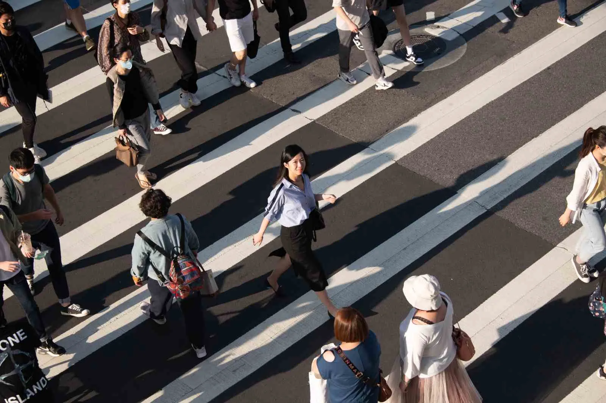

- 

問題
2020年的台灣，每一天有八至九個爸爸、媽媽或孩子跟平常一樣出門，從此回不了家，另有1320人在馬路上因自己或他人不慎，非死即傷。算一算，國家社會在一年間付出三千條生命的代價，創近12年新高峰。相較於新冠疫情延燒一年半，台灣死亡人數逾300人引起的全面恐慌。台灣有「機車王國」之稱，機車已經可以說是台灣文化的一部分，不過，台灣地小人稠，時常發生汽機車爭道以及各種交通亂象，導致最大的受害者就往往會是行走的路人，近年台灣輿論也開始要求以日本為標竿來改善交通安全。據台日警方統計，從2010年到疫情開始前的2019年，日本每年交通事故死亡與受傷合計人數從90萬餘人減至46萬餘人，而同一期間，台灣每年交通事故死傷合計人數從29萬餘人增至45萬餘人，為何台灣交通事故這麼多，且一直增加？為何日本交通事故卻漸漸減少？筆者認為，台灣與日本的私人動力車輛擁有率有明顯差距，高車輛密度造成高交通事故發生機率，這可能才是台日交通安全差異的根本原因。
要改善交通，七成和教育有關，其次是工程和執法，「這不僅是安全管理系統，也是體制問題，更是文化問題，以及我們如何看這事情」張新立主張，交通安全觀念要從小累積，「教學要引起動機、影響認知以及實踐，而不是只是宣導。」，交通教育一定要落實，我們不能每天賭命盤，覺得壞事不會發生在自己身上。治安，或許可以靠政府、社區、警察、科技。道安，卻絕對須從人人自身做起。若想讓台灣成為作家葉石濤筆下：「一個適合人們作夢、幹活、戀愛、結婚、悠然過活的地方」，先決條件絕對是讓人安心而無所畏懼。警察局交通隊表示，經統計雲林縣今年一至九月份交通事故總計7092件，其中發生於路口有4433件，整整佔總件數六成，該局利用十月交通安全月實施期間，以拓展宣導層面與加強執法力度雙向並行，宣導部分以「點」、「線」、「面」串聯，讓民眾謹記「路口慢看聽、行人停看聽」路口安全口訣；執法層面亦會針對「路口安全」五大危害違規項目加強取締，提醒民眾遵守交通規則以免受罰。
因應零死亡願景而生的道路安全設計包括在十字路口大量使用圓環取代交通號誌，以降低車速、改變車禍衝撞的角度，降低死傷；快速道路中間的分隔柵欄，減少車輛對撞機會。這樣的交通願景有效減低重大交通意外發生，「零事故」並不是交通零死亡願景的目標，而是認清人的能力、注意力有限、會犯錯，沒有人可以是完美的駕駛，因此透過道路設計、科技、法規與教育各方面來加強道路安全。為了盡最大努力保障用路人安全，瑞典對駕駛人的要求與教育更是重中之重——透過嚴格與扎實的考駕照制度，一個瑞典認證合格的駕駛人，除了最基本的機械駕駛與基本的維護能力之外，還要能夠了解交通規則、各種號誌以及區分路權，更要有環保意識的開車，減少環境衝擊；以及要能在不同狀況下判斷風險、做出最安全的決定。在瑞典駕車就是安全至上，盡可能的減少風險，說穿了就是跟瑞典足球風格一樣，防守、防守再防守，穩穩地守住局面，對許多人來說應該非常無趣，但少了各種憤怒、抓狂、互相叫罵、狂按喇叭、血脈賁張的戲劇效果，剩下的就是一條安全回家路。